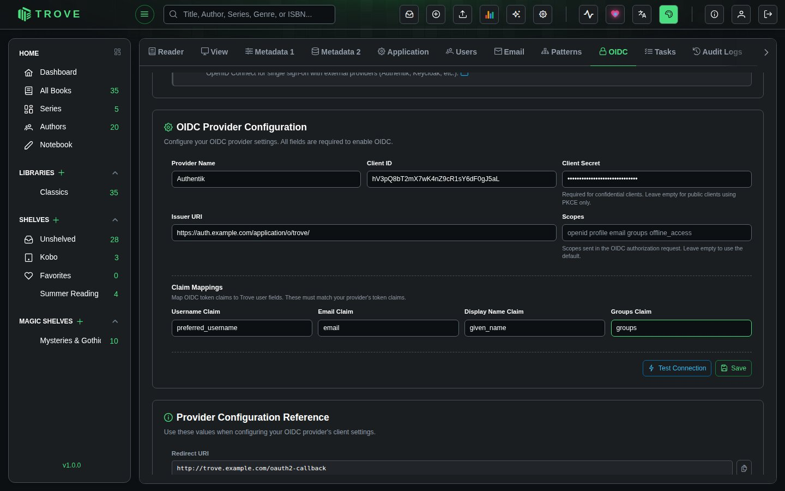
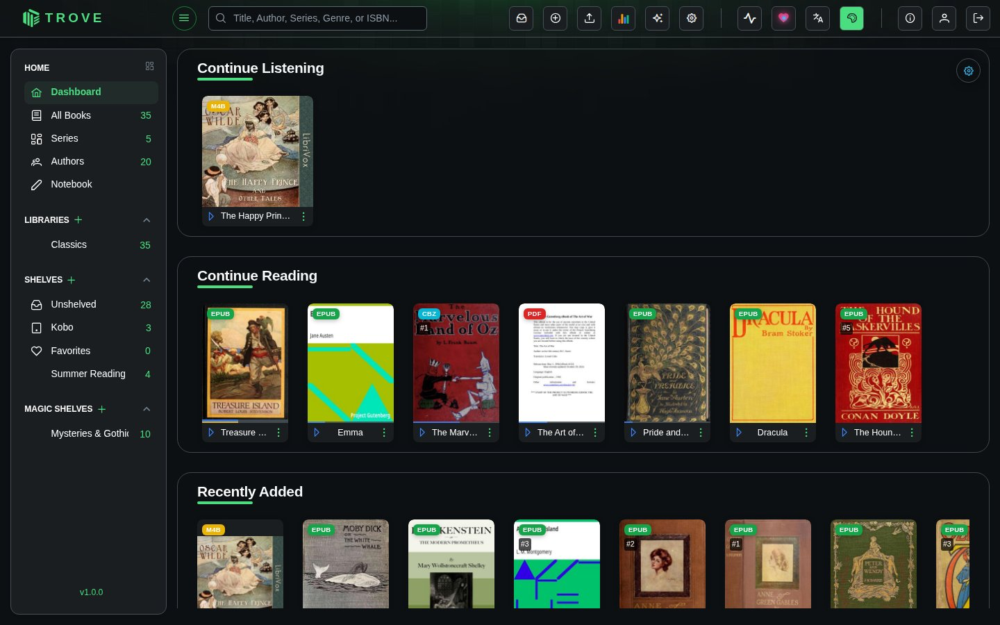
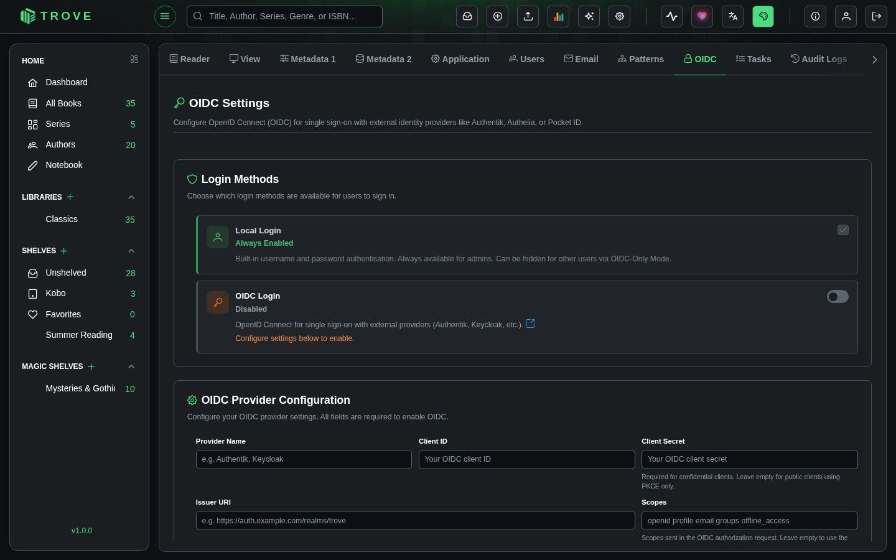
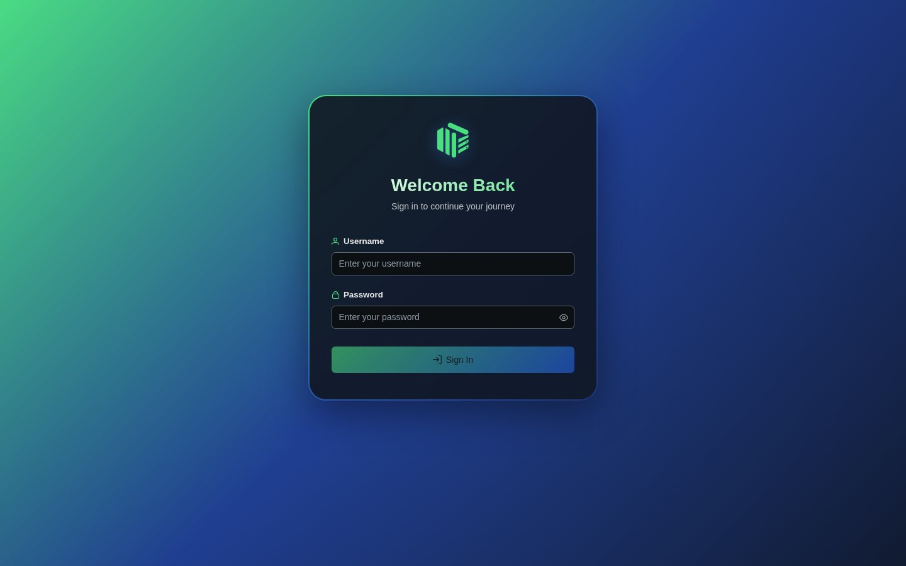

Authentik
Seamlessly integrate Authentik as your single sign-on (SSO) provider for Trove. Centralize user authentication, enhance security, and simplify access management across your applications.
What You'll Achieve
With Authentik integration, you can:
- Enable single sign-on (SSO) for seamless access to Trove without separate login credentials
- Centralize user management across multiple applications from one unified interface
- Enhance security with OAuth2/OpenID Connect protocols and optional multi-factor authentication
- Control access through provider bindings and authorization flows at user or group level
- Simplify login experience for your users with automatic session management
- Audit authentication with comprehensive logging of all login attempts and user activities
How Authentik Integration Works
The Authentication Flow
Understanding the authentication flow helps troubleshoot issues and explains what happens behind the scenes:
-
🎫 User Initiates Login
User attempts to access Trove and is redirected to Authentik's secure login portal. The original destination URL is preserved for automatic redirect after authentication. -
🔑 Authentik Authenticates
User enters credentials in Authentik's secure login page. Authentik validates the credentials against its user directory and can optionally prompt for additional authentication factors (MFA). -
✅ Token Exchange
Authentik validates credentials and issues OAuth2 tokens (access token, ID token, and optionally a refresh token). These tokens contain user information and are cryptographically signed. -
🚪 Access Granted
Trove receives and validates the tokens, extracts user information, matches it with an existing Trove user account, and grants access to the authenticated user.
Setting Up Authentik
Step 1: Create Application and Configure OAuth2 Provider
Begin by setting up Trove as an application in Authentik with OAuth2 authentication. This entire process should take about 5-10 minutes:
-
Navigate to Applications
Open your Authentik dashboard and click "Create a new application". This will launch a setup wizard that guides you through the process.
-
Configure Application Details

Fill in the application section:
- Name:
Trove(or your preferred name) - This name will be displayed to users on the Authentik login page - Slug:
trove(used in URLs, lowercase recommended) - This creates a unique identifier for the application - Click Next to proceed to provider configuration
- Name:
-
Select Provider Type

- Choose OAuth2/OpenID Provider from the available options
- Click Next to configure provider settings
-
Configure Provider Settings

- Name:
Trove OAuth2(or your preferred name) - This is the internal provider name - Authorization Flow: Select
default-provider-authorization-implicit-consent- This flow handles user consent and authorization
- Implicit consent means users won't be prompted to approve access each time
- Client Type: Select Public (under Protocol settings)
- Public clients are suitable for applications that run in browsers or mobile apps
- Client secrets cannot be securely stored in these environments
- Name:
-
Set Up Redirect URIs
Configure where Authentik should redirect users after authentication. These URIs are critical for security:

Add these redirect URIs, with your Trove address in place of
trove.example.com(Trove shows the exact callback address under Provider Configuration Reference in Settings › OIDC):- Strict:
https://trove.example.com/oauth2-callback, the address that receives the sign-in response - Regex:
https://trove.example.com/.*, which also covers returning to Trove after signing out
Example for a production setup:
Strict: https://books.example.com/oauth2-callback Regex: https://books.example.com/.*Example for local testing:
Strict: http://192.168.1.100:6060/oauth2-callback Regex: http://192.168.1.100:6060/.*Ensure the signing key is set to "authentik Self-signed certificate".
- Strict:
-
Configure OAuth Scopes
Define what information Authentik will share with Trove. Each scope grants access to specific user data:

Add the following scopes (all are required):
- ✉️ email - User's email address for notifications and account identification
- 🆔 openid - Basic OpenID Connect authentication (required for OIDC)
- 👤 profile - User profile information including name and username
- 🔄 offline_access - Enables refresh tokens for extended sessions without re-authentication
Click Save to apply the configuration.
-
Bind Users to Application
Control which users can access Trove through Authentik. This step is crucial for access control:

In the "Configure Bindings" section:
- Type: Select User to bind individual users, or Group to bind entire groups
- Select Users/Groups: Choose the users or groups who should have access to Trove
- Timeout: (Optional) Set session timeout in seconds for enhanced security
- Click Save Binding to apply
Step 2: Retrieve Provider Credentials
Get the credentials needed to connect Trove to Authentik. You'll need these in the next step:

- Navigate to Providers
From the Authentik main page, go to Applications → Providers and select the provider you just created (it should be namedTrove OAuth2if you followed the naming convention)

- Copy Credentials
You'll need two pieces of information from this screen:- 🔑 Client ID - Your application's unique identifier (looks like a long alphanumeric string)
- 🌐 OpenID Configuration Issuer URL - The authentication endpoint (typically
https://your-authentik-domain/application/o/trove/)
Configuring Trove
Step 3: Connect Trove to Authentik
Now configure Trove to use Authentik as the authentication provider. This is the final configuration step:

-
Open Trove Settings
Go to Settings › OIDC in your Trove admin interface. You'll need administrator privileges to access this section. -
Configure OIDC Provider Enter the credentials you copied from Authentik:
- Provider Name:
Authentik(or your preferred display name)- This name appears on the login button, so make it recognizable to users
- Client ID: Paste the Client ID from Authentik (the long alphanumeric string)
- Make sure there are no extra spaces before or after
- Issuer URI: Paste the OpenID Configuration Issuer URL from Authentik
- This should end with a trailing slash
- Example:
https://auth.example.com/application/o/trove/
- Click Save to store the configuration
- Provider Name:
-
Enable OIDC Authentication
Under Login Methods, switch on OIDC Login to start using Authentik- When enabled, users see a sign-in button for Authentik below the username and password on the Trove login page
- The standard username/password login will still be available unless specifically disabled
Testing the Integration
Step 4: Test Login with Authentik
Verify that the integration works correctly before rolling it out to users. Testing ensures a smooth experience:

-
Impersonate a User (Recommended for Testing)
- Go to Authentik → Directory → Users
- Select a user bound to the Trove application
- Click "Impersonate" to log in as that user
- This allows you to test without logging out of your admin account
Alternative Testing Method:
- Open an incognito/private browser window
- Navigate to your Trove instance
- Click "Login with Authentik" (or your configured provider name)

- Access Trove
- You'll see the Authentik login page with available applications
- The "Trove" tile should be visible (if the user is bound to the application)
- Click the "Trove" tile to initiate authentication
- You should be automatically redirected and logged into Trove

- Verify User Information
- Check that your username and email are displayed correctly in Trove
- Verify that you have access to your expected content and permissions
- Test logging out and logging back in to ensure session handling works
Managing Authentication
Disabling Authentik Authentication
If you need to temporarily disable or switch authentication methods (for maintenance or troubleshooting):

-
Navigate to Authentication Settings
Go to Trove → Settings › OIDC -
Disable OIDC
Under Login Methods, switch off OIDC Login- This immediately disables Authentik authentication
- Active sessions remain valid until they expire
- New login attempts will use standard authentication
-
Log Out
Click Logout to end your current session and verify the change -
Standard Login Returns
You'll be redirected to the standard Trove login page with username/password fields

Troubleshooting
Common Issues and Solutions
Authentication Fails:
- ✓ Verify usernames match exactly between Authentik and Trove (case-sensitive)
- ✓ Check the redirect URI matches Trove's exactly
- ✓ Ensure user is bound to the Trove application
- ✓ Confirm all required OAuth scopes are enabled
- ✓ Check browser console for errors (F12)
Redirect Errors:
- ✓ Verify the redirect URI ends in
/oauth2-callback - ✓ Confirm domain matches exactly in both systems
- ✓ Ensure HTTPS is used in production
- ✓ Validate regex pattern:
https://your-domain/*
User Not Found:
- ✓ Create matching username in Trove (case-sensitive)
- ✓ Verify user has appropriate bindings in Authentik
- ✓ Ensure email scope is properly configured
"Invalid Client" Error:
- ✓ Check Client ID is copied correctly (no extra spaces)
- ✓ Verify provider is set to "Public" client type
- ✓ Ensure Issuer URI ends with trailing slash
Session/Token Issues:
- ✓ Enable offline_access scope for refresh tokens
- ✓ Review session timeout settings in both systems
- ✓ Check token expiration settings in Authentik
SSL/Certificate Errors:
- ✓ Ensure valid SSL certificates on both systems
- ✓ Verify Issuer URI uses HTTPS in production
- ✓ Check certificate chains are properly configured
Viewing Logs
Authentik: System → System Tasks or Events → Logs
Trove: Check application logs for OAuth-related errors
Best Practices
Security Recommendations
- 🔒 Use HTTPS - Always use HTTPS in production with valid SSL certificates
- 👥 Review Bindings - Audit user access regularly and use groups for easier management
- 🔄 Enable offline_access - Improves user experience while maintaining security
- 📊 Monitor Activity - Track login attempts and set up alerts for unusual patterns
- 🛡️ Keep Updated - Regularly update both Authentik and Trove, test in staging first
- 🔐 Enable MFA - Implement multi-factor authentication, especially for administrators
- 🔑 Rotate Credentials - Review access regularly and regenerate credentials annually
Optimization Tips
- 📝 Use descriptive names - Name providers clearly (e.g., "Trove Production OAuth2")
- 🏷️ Leverage groups - Organize users by department/role and bind groups instead of individuals
- ⚡ Optimize tokens - Use short access tokens (15-60 min) with long-lived refresh tokens
- 🌐 Use reverse proxy - Add rate limiting, IP whitelisting, and WAF rules
- 🔄 Test in staging - Validate changes in a staging environment before production
User Experience
- 🎨 Customize branding - Add your logo and consistent color schemes to the login page
- 📚 Document the process - Create user guides with screenshots and support contact info
- 🆘 Enable self-service - Allow password resets and MFA device management
Additional Resources
- Authentik Documentation: goauthentik.io/docs
- OAuth 2.0 Specification: Understanding the protocol behind SSO
- OpenID Connect Core: Detailed information about OIDC flows
- Security Best Practices: Regular security audits and penetration testing
Authentik provides enterprise-grade authentication with minimal configuration. Once set up, your users will have secure, streamlined access to Trove with the convenience of single sign-on and the security of centralized authentication management.